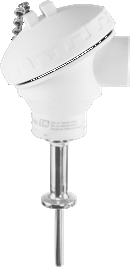
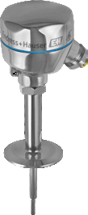
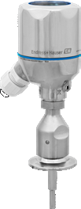
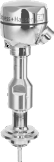
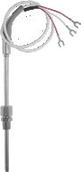

iTHERM ModuLine TM402
Hygienic modular thermometer, direct contact, imperial
iTHERM ModuLine TM401 — Hygienic modular thermometer, direct contact, metric. Đo nhiệt độ Endress+Hauser chính hãng, Fast Group Engineering cung cấp tại Việt Nam, tư vấn cấu hình và báo giá theo RFQ kèm CO/CQ.

iTHERM ModuLine TM401 thuộc nhóm Hygienic Modular Thermometers trong danh mục Đo nhiệt độ của Endress+Hauser. Hygienic design.
Fast Group Engineering cung cấp TM401 chính hãng tại Việt Nam cho nhà máy, nhà thầu EPC và đơn vị tích hợp hệ thống: đối chiếu datasheet theo đúng mã đặt hàng, tư vấn chọn dải đo — kết nối quá trình — vật liệu tiếp xúc theo điều kiện vận hành thực tế, kiểm tra yêu cầu chứng nhận và hỗ trợ nhập khẩu kèm CO/CQ.
Thông số hiển thị ở đây trích từ catalog tổng của Endress+Hauser và dùng để tra cứu nhanh. Dải đo, độ chính xác, giới hạn nhiệt độ và áp suất thay đổi theo phiên bản và cấu hình đặt hàng — trước khi chốt mã, cần đối chiếu Technical Information (TI) đúng mã đặt hàng trên endress.com.
Chỉ hiển thị các trường có trong dữ liệu catalog gốc; trường trống nghĩa là catalog tổng không nêu, cần tra Technical Information của model.
iTHERM ModuLine TM401 thuộc nhóm Hygienic Modular Thermometers (Đo nhiệt độ). Fast Group Engineering hỗ trợ đối chiếu điều kiện quá trình thực tế — môi chất, nhiệt độ, áp suất, kết nối sẵn có — để xác nhận model phù hợp trước khi báo giá.
Anh/chị gửi RFQ cho Fast Group Engineering để kiểm tra nguồn hàng Endress+Hauser chính hãng, xác nhận cấu hình theo mã đặt hàng, lead time và chứng từ CO/CQ giao tại Việt Nam.
Không. Dữ liệu được trích từ catalog chính thức của Endress+Hauser và dùng để tra cứu nhanh. Dải đo, độ chính xác, giới hạn nhiệt độ và áp suất phụ thuộc phiên bản và cấu hình đặt hàng — cần đối chiếu Technical Information (TI) đúng mã đặt hàng trên endress.com trước khi chốt.
Không. Giá thiết bị đo lường phụ thuộc cấu hình, số lượng, chứng nhận và lead time từng lô, nên Fast Group báo giá theo RFQ thay vì công bố giá không có nguồn hoặc đã hết hiệu lực.

Hygienic modular thermometer, direct contact, imperial

Hygienic modular thermometer, with/without thermowell, metric

Hygienic modular thermometer, with/without thermowell, imperial

Cable probe, RTD